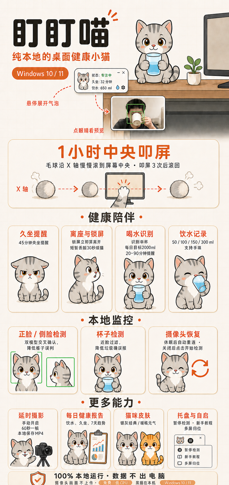

这张图讲了什么
- 中央滚动叩屏：久坐满 1 小时，猫缩成毛球滚到中央叩屏三次再滚回
- 锁屏与离座续接：锁屏立即算离开，短暂丢脸 30 秒内回来继续累计
- 正脸 / 侧脸更稳：双分类器交叉确认，过滤对称假目标降低误判
- 喝水记录 · 猫抱杯：一口 50 / 一大口 100 / 半杯 150 / 一杯 300ml
- 饮水目标 + 提醒：每天 2000ml，提醒默认 30 分钟可调 20–90
- 低频本地预览：点眼睛才显示画面，没信号会明说并让出设备
- 每日健康报告：饮水趋势、坐时长、7 天对比，本地 CSV 生成
- 延时摄影：手动开始，60 秒一帧，停止时本地合成 MP4
- 猫咪皮肤：银灰经典 / 暖橘元气两套，右键或托盘切换
- 托盘 + 开机自启：暂停检测、关闭中央提醒、重看教程都在菜单里